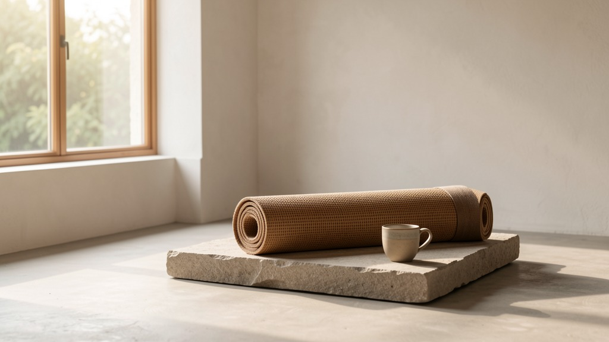

Environmental
Command your day before the world commands you.
The first hour decides the tone of the rest. Take it back.
Section I
What does the first 30 minutes of your morning currently look like — honestly?
0/240Which of these takes your energy first each morning?
How do you want to feel by the time the world reaches you?
Section II
How many minutes can you genuinely commit each morning — not ideally, genuinely?
Choose the practices that belong in your morning.
One line you will say before the day begins.
Section III
What is the one aligned action tomorrow that your future self is asking for?
When does this ritual begin?
Section IV

The morning is the doorway. The full work is the house. Begin the deeper rhythm →